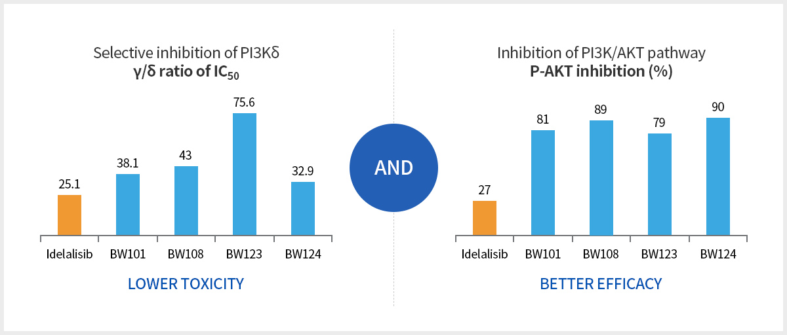
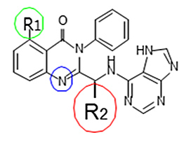
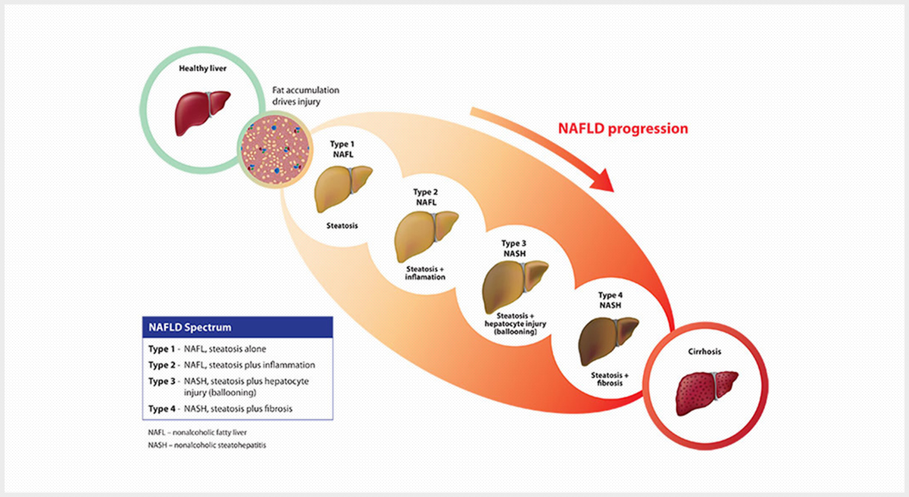
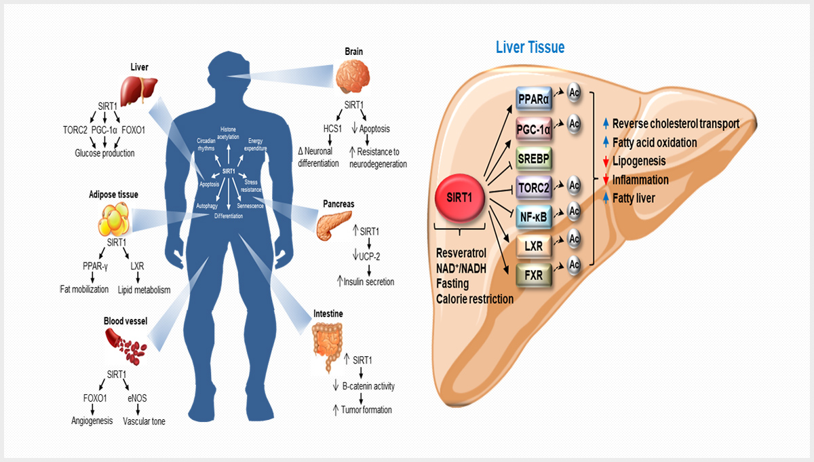

Research연구내용
Research연구내용
차세대 PI3Kδ 표적 혈액암 치료제
악성종양 생성에 중심적으로 관여하는 PI3Kδ
차세대 혈액암을 치료 시장의 키워드가 될 PI3Kδ의 무한한 잠재력
BW candidates
Bioway는 SAR study와 DDDD(Data Driven Drug Discovery)를 통해 업계 선두 (Best-in-Class) pi3k-delta 표적 혈액 치료제 후보물질 및 back-up compounds 보유, 특히 BW101은 IND 및 임상단계 준비중입니다.
Blood Cancer
최초의 FDA 승인 PI3Kδ 저해제
혈액암 치료제
계약 규모: 총 6억 ($600 million) 달러
예상: Peak sale 150억 ($ 1.5 billion) 달러
임상에서 심각한 부작용 및 사망자 발생 (in Mar. 2016, reviewed by EMA)
PI3Kδ 저해제
낮은 독성
동등 혹은 동등 이상의 효과
In vitro STUDY SHOWS

동물모델을 활용한 FDA 승인약물과 독성문제 비교
| 독성시험 | BW101 | Idelalisib | Copanlisib | ||
|---|---|---|---|---|---|
| 투여 농도 | 50, 100 mg/kg | 50, 100, 150 mg/kg | 0.3, 1, 3 mg/kg | ||
| 투여 방법 | 경구 (하루 한번 투여) | 경구 (하루 두번 투여) | 정맥주사 (3주 투여 1주 회복) | ||
| 투여 기간 | 4주 반복 4주 회복 | 4주 반복 4주 회복 | 수컷 : 4 Cycle, 암컷 : 3 Cycle | ||
| 동물 성별 | 암컷 12 마리 | 수컷 7마리, 암컷 2마리 | 수컷 10마리, 암컷 10마리 | ||
| 결과 | 사망 | 사망동물 없음 | 수컷 6마리, 암컷 2마리 | 수컷 8마리, 암컷 7마리 | |
| 면역독성 | 혈구 감소 | 부작용 없음 | 혈구 감소 | 혈구 감소 | |
| 염증반응 | 염증반응 없음 | 혀 궤양, 궤사 (grade 4이상) 심장 궤양, 간 궤사 염증 나타남 |
간, 피부궤양, 염증 비장 궤사, 흉선 변질, 심장 심근 변형, 폐 | ||
| 간독성 | 고농도에서 미비한 간수치 증가 | 모든 농도에서 간염 발생 (Grade 2이상) 간수치 감소 |
콜레스테롤, 간수치 모두 증가, 무기질 수치 감소 | ||
| 장기비대 및 감소 | 심장, 비장 비대 가슴샘 감소 (이상소견 없음) | 가슴샘, 부고환, 고환 감소 | 고환, 자궁, 림프절, 침샘, 부신땀샘, 비장 비대, 가슴샘감소 | ||
| Reference | Pre-clinical data (바이오톡스텍) | NDA 자료 (Application number: 205858, CDER stamp date : 2013.9.11 | NDA 자료 (Application number: 209936, Received date2017.3.16) | ||
BW 101 & BW 108

BW 101 and BW 108 has a very similar structure, with the same backbone, as Idelalisib.
Thus, the toxicity and side effects are better anticipated.
Confirmed by Thermo Fisher.
Patent protected (application number: KR 10-2016-0093062)
01
Higher Activity
4 to 10 folds higher than Idelalisib.
02
Overcomes Hepatoxicity
60mg, once a day dose
(Idelalisib - 150mg twice a day dose)
03
Overcomes Immunotoxicity
through lowering the value of ratio(γ/δ)
지방간

비알코올성 지방간 치료제
